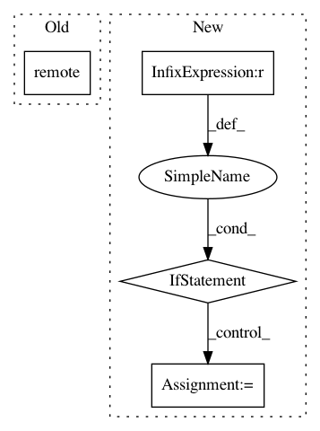

c4e273920f517b18c99fbabca49135dd6e30e683,python/ray/experimental/client/api.py,ClientAPI,remote,#ClientAPI#,185
Before Change
return self.worker.wait(*args, **kwargs)
def remote(self, *args, **kwargs):
return self.worker.remote(*args, **kwargs)
def call_remote(self, instance: "ClientStub", *args, **kwargs):
return self.worker.call_remote(instance, *args, **kwargs)
After Change
// Delayed import to avoid a cyclic import
from ray.experimental.client.common import remote_decorator
if len(args) == 1 and len(kwargs) == 0 and callable(args[0]):
// This is the case where the decorator is just @ray.remote.
return remote_decorator(options=None)(args[0])
error_string = ("The @ray.remote decorator must be applied either "
"with no arguments and no parentheses, for example "
""@ray.remote", or it must be applied using some of "
"the arguments "num_returns", "num_cpus", "num_gpus", "
""memory", "object_store_memory", "resources", "
""max_calls", or "max_restarts", like "
""@ray.remote(num_returns=2, "
"resources={\"CustomResource\": 1})".")
assert len(args) == 0 and len(kwargs) > 0, error_string
return remote_decorator(options=kwargs)
def call_remote(self, instance: "ClientStub", *args, **kwargs):
In pattern: SUPERPATTERN
Frequency: 3
Non-data size: 4
Instances
Project Name: ray-project/ray
Commit Name: c4e273920f517b18c99fbabca49135dd6e30e683
Time: 2020-12-22
Author: me@barakmich.com
File Name: python/ray/experimental/client/api.py
Class Name: ClientAPI
Method Name: remote
Project Name: ray-project/ray
Commit Name: 80f6dd16b2a7f5e90ff882751c37b7f2e02bd147
Time: 2020-12-20
Author: me@barakmich.com
File Name: python/ray/experimental/client/server/server.py
Class Name: RayletServicer
Method Name: _schedule_method
Project Name: ray-project/ray
Commit Name: 7c0200c93b88898507dbafcb2d92314d0dbcd451
Time: 2020-04-28
Author: ed.nmi.oakes@gmail.com
File Name: python/ray/serve/master.py
Class Name: ServeMaster
Method Name: create_endpoint